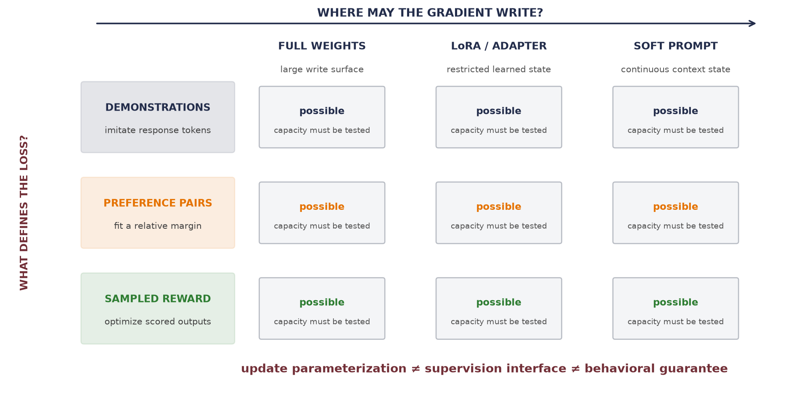
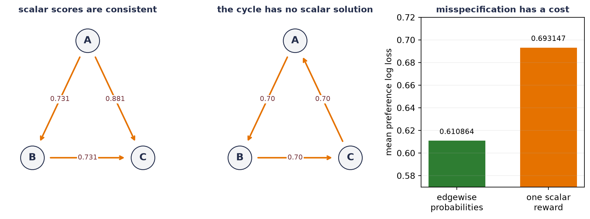
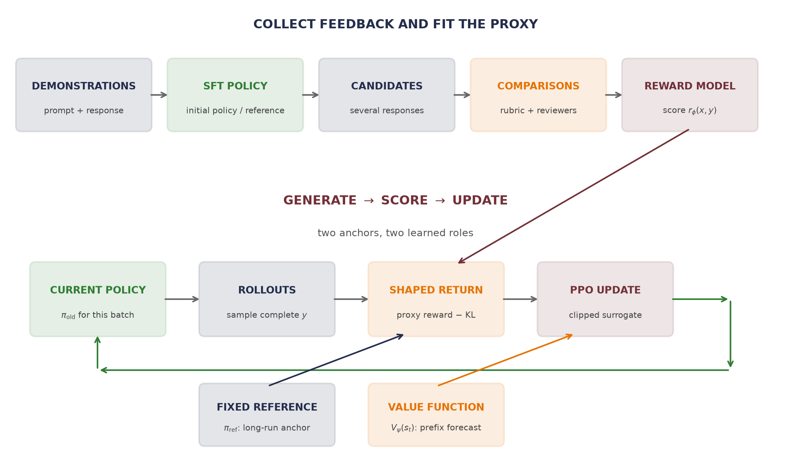
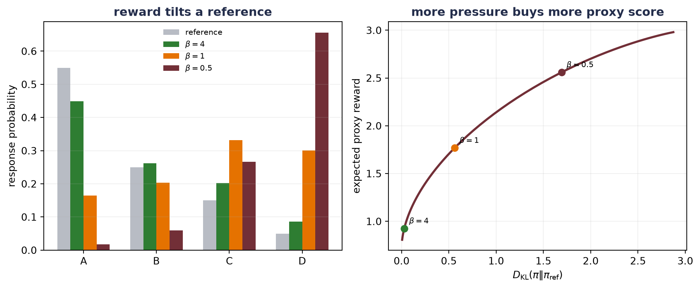
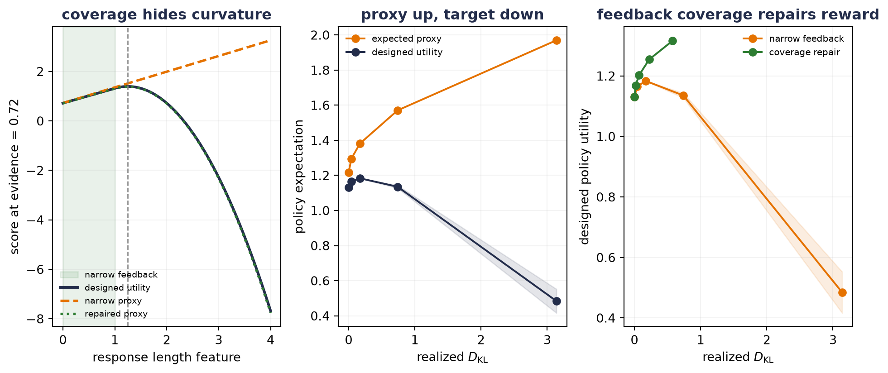
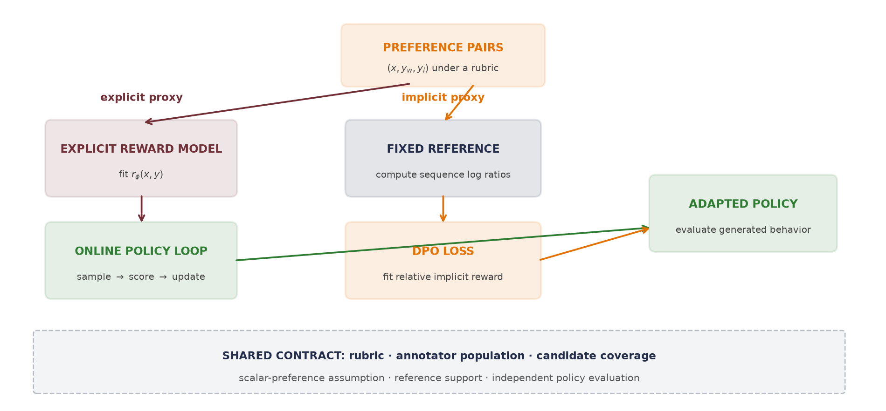
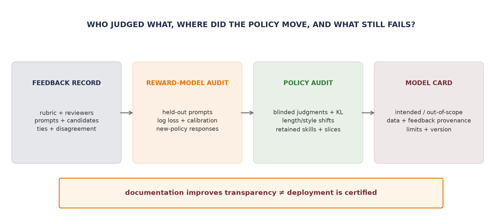

18 Alignment and RL Fine-Tuning
Chapter 17 ended with a distinction worth keeping in view—where the update lives is not what the update optimizes. Full fine-tuning, LoRA, and a soft prompt choose different places for gradient blame to write. None of them says what should count as a good answer.
This chapter changes that second choice. Pretraining asks for the next corpus token. Instruction tuning asks a model to imitate demonstrated responses. Preference learning asks which response wins a comparison. Online policy optimization asks a changing model to produce responses that score well under a reward signal. These supervision interfaces can often be paired with different update locations:
The word alignment is sometimes used as though it named one algorithm or one finished property—here it will mean something narrower and checkable: changing a model’s behavior toward a stated objective, for a stated prompt distribution and a stated population of evaluators. Helpful, honest, and harmless are useful goals from the course lecture—they are not certificates that training can stamp onto a model.
The central problem is therefore a measurement problem. We need to specify whose judgment is collected, under which rubric, over which candidate responses, and what happens when optimization reaches beyond that coverage. Only then does it make sense to compare instruction tuning, reward-model pipelines, and direct preference optimization.
18.1 Same model, different supervision
Recall the causal language model from Chapter 14. Pretraining scores every corpus token that the model is asked to predict. In a prompt–response record, however, the prompt usually supplies the condition—the response supplies the supervised target. Let
\[ z=(x_1,\ldots,x_P,y_1,\ldots,y_T) \]
be a serialized prompt \(x\) followed by response \(y\). Define \(m_t=1\) when token \(z_t\) belongs to the response (including its end token) and \(m_t=0\) for prompt or padding positions. A response-masked supervised fine-tuning objective is
\[ \mathcal{L}_{\mathrm{SFT}}(\theta) =-\E_{(x,y)\sim\mathcal{D}_{\mathrm{demo}}} \left[ \frac{1}{\sum_t m_t} \sum_{t=2}^{P+T}m_t\log\pi_\theta(z_t\mid z_{<t}) \right]. \tag{18.1}\]
The denominator makes the displayed version a mean per scored response token. Some implementations sum instead—the choice changes gradient scale and must be stated. This is the book’s founding instance of the audit habit from Section 4.6.1: Case 1 within the mask, with the denominator itself part of the protocol. The prompt is still essential because it conditions every response probability. It simply does not receive target loss in this version.
The tensor contract is explicit: logits has shape \((B,L,V)\), token IDs and the mask have shape \((B,L)\), and the returned sequence score has shape \((B,)\). The helper below audits that excluded prompt and padding targets cannot change that score.
Coding hygiene: audit completion-only sequence log probabilities
def completion_log_probability(
logits: Tensor, token_ids: Tensor, response_mask: Tensor
) -> Tensor:
"""Sum next-token log probabilities only at response positions."""
if logits.shape[:2] != token_ids.shape or token_ids.shape != response_mask.shape:
raise ValueError("logits, token IDs, and mask must share batch and time")
next_token_logps = F.log_softmax(logits[:, :-1], dim=-1).gather(
dim=-1, index=token_ids[:, 1:].unsqueeze(-1)
).squeeze(-1)
return (next_token_logps * response_mask[:, 1:]).sum(dim=1)
token_ids = torch.tensor([
[1, 2, 3, 4, 5, 6, 0],
[1, 2, 7, 8, 9, 6, 0],
])
response_mask = torch.tensor([
[False, False, False, True, True, True, False],
[False, False, True, True, True, True, False],
])
toy_logits = torch.randn(2, 7, 11)
original_logps = completion_log_probability(toy_logits, token_ids, response_mask)
perturbed_logits = toy_logits.clone()
inactive_predictors = ~response_mask[:, 1:]
perturbed_logits[:, :-1][inactive_predictors] = torch.linspace(-5, 5, 11)
perturbed_logps = completion_log_probability(
perturbed_logits, token_ids, response_mask
)
print("scored response tokens:", response_mask[:, 1:].sum(dim=1).tolist())
print(
"largest change after perturbing prompt/padding predictions:",
f"{(perturbed_logps - original_logps).abs().max().item():.2e}",
)scored response tokens: [3, 4]
largest change after perturbing prompt/padding predictions: 0.00e+00Instruction tuning is supervised fine-tuning on one or more tasks expressed through natural-language instructions. It changes the organization of the data—not the optimizer. FLAN, for example, studied whether instruction tuning across many tasks improved transfer to held-out tasks. That is an empirical result about its models and scale—not a theorem that every instruction dataset generalizes.
The lecture shorthand says SFT teaches format while preferences teach quality—a distinction that is too sharp. A carefully written demonstration can teach facts, style, safety behavior, and substantive quality. Equation 18.1 says what SFT actually guarantees: it rewards probability assigned to demonstrated response tokens. It does not directly say why one unobserved response should be preferred to another.
Comparisons offer a different interface. For one prompt, a reviewer can sometimes choose between two candidates more reliably than they can write an ideal response from scratch. That generation–evaluation gap motivates preference data. It does not make comparison cheap in every domain, remove the need for expertise, or turn a judgment into universal truth.
18.2 A preference is a measurement, not a value
One preference record contains a prompt \(x\), a response judged better \(y_w\), and a response judged worse \(y_l\):
\[ (x,y_w,y_l)\in\mathcal{D}_{\mathrm{pref}}. \]
The subscript \(w\) means winner under this comparison—not that the response is absolutely correct, harmless, or good. The label depends on the rubric, the reviewer population, the order in which candidates were displayed, and the policy that generated the candidates. Ties and disagreement are data, too; silently forcing them into a total order hides uncertainty.
To turn comparisons into a trainable scalar score, many pipelines use the Bradley–Terry model. A reward model \(r_\phi(x,y)\in\mathbb{R}\) assigns a score to each completed response. The probability of preferring one response depends on the score difference:
\[ P_\phi(y_w\succ y_l\mid x) =\sigma\!\left(r_\phi(x,y_w)-r_\phi(x,y_l)\right). \tag{18.2}\]
This is the sigmoid from Chapter 2. The corresponding negative log-likelihood is ordinary binary cross-entropy on a difference of scores:
\[ \mathcal{L}_{\mathrm{RM}}(\phi) =-\E_{(x,y_w,y_l)\sim\mathcal{D}_{\mathrm{pref}}} \log\sigma\!\left(r_\phi(x,y_w)-r_\phi(x,y_l)\right). \tag{18.3}\]
Only differences are identified. Adding any prompt-dependent constant \(c(x)\) to every candidate reward leaves Equation 18.2 unchanged. The model learns a ruler—one with no identifiable zero point.
There is a deeper assumption: all comparisons for one prompt must be representable by one scalar ordering. Let \(\vect{r}=(r_A,r_B,r_C)^\top\in\mathbb{R}^3\). Let the rows of \(\matr{B}\in\mathbb{R}^{3\times3}\) encode \(A-B\), \(B-C\), and \(C-A\). Then \(\matr{B}\vect{r}\) contains their three score differences. A transitive set of probabilities can come from a score vector. A cycle that prefers each response to the next cannot:
Experiment: make the scalar-reward assumption fail on a preference cycle
incidence = torch.tensor([
[1.0, -1.0, 0.0],
[0.0, 1.0, -1.0],
[-1.0, 0.0, 1.0],
])
transitive_scores = torch.tensor([1.0, 0.0, -1.0])
transitive_targets = torch.sigmoid(incidence @ transitive_scores)
fitted_transitive = torch.linalg.lstsq(
incidence, torch.logit(transitive_targets)
).solution
fitted_transitive -= fitted_transitive.mean()
cyclic_targets = torch.full((3,), 0.70)
fitted_cyclic = torch.linalg.lstsq(
incidence, torch.logit(cyclic_targets)
).solution
fitted_cyclic -= fitted_cyclic.mean()
cyclic_predictions = torch.sigmoid(incidence @ fitted_cyclic)
scalar_loss = F.binary_cross_entropy(cyclic_predictions, cyclic_targets)
edgewise_floor = F.binary_cross_entropy(cyclic_targets, cyclic_targets)
fig, axes = plt.subplots(1, 3, figsize=(10, 3.8))
positions = {"A": (0.5, 0.92), "B": (0.08, 0.12), "C": (0.92, 0.12)}
def draw_preference_triangle(
axis: Axes, edges: list[tuple[str, str, str]], title: str
) -> None:
axis.set_xlim(-0.12, 1.12)
axis.set_ylim(-0.08, 1.08)
axis.axis("off")
for name, (x_pos, y_pos) in positions.items():
axis.scatter(x_pos, y_pos, s=820, color="#F3F4F6", edgecolor=navy, zorder=3)
axis.text(x_pos, y_pos, name, ha="center", va="center", color=navy,
fontsize=12, weight="bold", zorder=4)
for start, end, label in edges:
x0, y0 = positions[start]
x1, y1 = positions[end]
axis.annotate("", xy=(x1, y1), xytext=(x0, y0),
arrowprops=dict(arrowstyle="->", color=orange, lw=1.8,
shrinkA=22, shrinkB=22))
axis.text((x0 + x1) / 2, (y0 + y1) / 2, label, ha="center", va="center",
fontsize=8.2, color=wine,
bbox=dict(facecolor="white", edgecolor="none", pad=1.0))
axis.set_title(title, color=navy, fontsize=10.5, weight="bold")
draw_preference_triangle(
axes[0], [("A", "B", "0.731"), ("B", "C", "0.731"),
("A", "C", "0.881")],
"scalar scores are consistent",
)
draw_preference_triangle(
axes[1], [("A", "B", "0.70"), ("B", "C", "0.70"),
("C", "A", "0.70")],
"the cycle has no scalar solution",
)
axes[2].bar([0, 1], [edgewise_floor.item(), scalar_loss.item()],
color=[green, orange], width=0.62)
axes[2].set_xticks([0, 1], ["edgewise\nprobabilities", "one scalar\nreward"])
axes[2].set_ylabel("mean preference log loss")
axes[2].set_ylim(0.57, 0.72)
axes[2].grid(axis="y", alpha=0.18)
axes[2].set_title("misspecification has a cost", color=navy,
fontsize=10.5, weight="bold")
for index, value in enumerate([edgewise_floor.item(), scalar_loss.item()]):
axes[2].text(index, value + 0.006, f"{value:.6f}", ha="center", fontsize=8.5)
plt.tight_layout()
plt.show()
shifted_probabilities = torch.sigmoid(incidence @ (fitted_transitive + 37.0))
print("recovered centered scores:", [round(x, 6) for x in fitted_transitive.tolist()])
print("cyclic scalar predictions:", [round(x, 6) for x in cyclic_predictions.tolist()])
print(f"cyclic scalar loss: {scalar_loss.item():.6f}")
print(f"unconstrained edgewise floor: {edgewise_floor.item():.6f}")
print(f"irreducible scalar gap: {(scalar_loss - edgewise_floor).item():.6f}")
print(
"largest probability change after adding 37 to every reward:",
f"{(shifted_probabilities - transitive_targets).abs().max().item():.2e}",
)
recovered centered scores: [1.0, -0.0, -1.0]
cyclic scalar predictions: [0.5, 0.5, 0.5]
cyclic scalar loss: 0.693147
unconstrained edgewise floor: 0.610864
irreducible scalar gap: 0.082283
largest probability change after adding 37 to every reward: 0.00e+00The cycle is not a pathology in the code. Summing the three Bradley–Terry logits would require
\[ (r_A-r_B)+(r_B-r_C)+(r_C-r_A) =3\operatorname{logit}(0.70), \]
but the left side cancels to zero while the right side is positive. Aggregated human judgments can contain cycles because reviewers differ, context changes, or preferences are genuinely plural. A scalar reward model compresses that structure; it does not discover a hidden universal value.
WarningTrap: a preferred response is not scalar ground truth
A pair says which presented response won under one prompt, rubric, candidate set, and review process. Report ties and disagreement, split by prompt rather than by correlated pairs, and state who supplied the judgments. Bradley–Terry is a useful model of those measurements, not proof that one population-independent reward exists.
18.3 Train a judge, then try to please the judge
What can we do with pairwise measurements? The classic language-model RLHF pipeline separates two learned objects:
- a reward model learns to score completed responses from comparisons; and
- a policy learns to generate responses that receive high score.
This is the course’s memorable description—train a judge, then try to please the judge. The word judge matters. A reward model is a learned proxy for a feedback process, not the feedback process itself.

In language generation, the state \(s_t\) is the prompt plus tokens generated so far, the action \(a_t\) is the next token, and the policy is \(\pi_\theta(a_t\mid s_t)\). A reward model often scores the completed response. A separate value function \(V_\psi(s_t)\) estimates expected future shaped return from a prefix so that policy-gradient updates can assign credit across token decisions. Calling the reward model PPO’s critic conflates those two roles—completed-response scoring and prefix-value forecasting.
For a fixed prompt, suppose there are \(K\) complete candidate responses. Let \(\vect{r}\in\mathbb{R}^K\) contain their reward-model scores, and let \(\vect{\pi},\vect{\pi}_{\mathrm{ref}}\in\mathbb{R}^K\) be positive probability vectors that each sum to one. A clean regularized objective is
\[ J(\vect{\pi}) =\sum_{i=1}^K\pi_i r_i -\beta D_{\mathrm{KL}} \!\left(\vect{\pi}\,\|\,\vect{\pi}_{\mathrm{ref}}\right), \qquad \beta>0, \tag{18.4}\]
where
\[ D_{\mathrm{KL}}(\vect{\pi}\,\|\,\vect{\pi}_{\mathrm{ref}}) =\sum_{i=1}^K\pi_i\log\frac{\pi_i}{\pi_{\mathrm{ref},i}}. \]
The first term seeks high proxy reward. The second charges for moving probability mass away from the reference. This is an objective to maximize—not a loss unless we negate it.
The exact finite-response policy
Before discussing an optimizer, let us solve the finite problem. Add a Lagrange multiplier \(\lambda\) for \(\sum_i\pi_i=1\). Differentiating with respect to one probability gives
\[ r_i-\beta\left(\log\frac{\pi_i}{\pi_{\mathrm{ref},i}}+1\right)+\lambda=0. \]
Rearrange and absorb terms independent of \(i\) into a normalizer:
\[ \pi^*(y_i\mid x) =\frac{\pi_{\mathrm{ref}}(y_i\mid x) \exp\!\left(r(x,y_i)/\beta\right)} {Z(x)}, \qquad Z(x)=\sum_{j=1}^K\pi_{\mathrm{ref}}(y_j\mid x) \exp\!\left(r(x,y_j)/\beta\right). \tag{18.5}\]
Equation 18.5 is a reference distribution tilted toward higher reward. Large \(\beta\) resists movement; small \(\beta\) applies more reward pressure. It is a stay-near dial—not a truth or safety guarantee.
Consider four possible responses with
\[ \vect{\pi}_{\mathrm{ref}}=(0.55,0.25,0.15,0.05), \qquad \vect{r}=(0,1,2,3). \]
The reference favors response A while the proxy favors D. The exact solution lets us watch probability move without sampling noise or a language model:
Experiment: solve the KL-regularized finite-response policy exactly
def gibbs_policy(reference: Tensor, reward: Tensor, beta: float) -> Tensor:
return torch.softmax(torch.log(reference) + reward / beta, dim=0)
def kl_divergence(policy: Tensor, reference: Tensor) -> Tensor:
return (policy * (torch.log(policy) - torch.log(reference))).sum()
reference = torch.tensor([0.55, 0.25, 0.15, 0.05])
reward = torch.tensor([0.0, 1.0, 2.0, 3.0])
shown_betas = [4.0, 1.0, 0.5]
shown_policies = [gibbs_policy(reference, reward, beta) for beta in shown_betas]
fig, axes = plt.subplots(1, 2, figsize=(10, 4.2))
x_positions = torch.arange(4).numpy()
width = 0.18
axes[0].bar(x_positions - 1.5 * width, reference.numpy(), width,
label="reference", color="#B8BCC4")
for offset, beta, policy, color in zip(
[-0.5, 0.5, 1.5], shown_betas, shown_policies, [green, orange, wine]
):
axes[0].bar(x_positions + offset * width, policy.numpy(), width,
label=fr"$\beta={beta:g}$", color=color)
axes[0].set_xticks(x_positions, ["A", "B", "C", "D"])
axes[0].set_ylabel("response probability")
axes[0].set_title("reward tilts a reference", color=navy, weight="bold")
axes[0].legend(frameon=False, fontsize=8)
axes[0].grid(axis="y", alpha=0.18)
sweep_betas = torch.logspace(math.log10(8.0), math.log10(0.2), 80)
sweep_policies = torch.stack([
gibbs_policy(reference, reward, beta.item()) for beta in sweep_betas
])
sweep_rewards = sweep_policies @ reward
sweep_kls = torch.stack([
kl_divergence(policy, reference) for policy in sweep_policies
])
axes[1].plot(sweep_kls.numpy(), sweep_rewards.numpy(), color=wine, lw=2.2)
for beta, color in zip(shown_betas, [green, orange, wine]):
policy = gibbs_policy(reference, reward, beta)
axes[1].scatter(kl_divergence(policy, reference).item(),
(policy @ reward).item(), color=color, s=45, zorder=3)
axes[1].annotate(fr"$\beta={beta:g}$",
(kl_divergence(policy, reference).item(), (policy @ reward).item()),
xytext=(5, 5), textcoords="offset points", fontsize=8)
axes[1].set_xlabel(r"$D_{\mathrm{KL}}(\pi\Vert\pi_{\rm ref})$")
axes[1].set_ylabel("expected proxy reward")
axes[1].set_title("more pressure buys more proxy score", color=navy, weight="bold")
axes[1].grid(alpha=0.18)
plt.tight_layout()
plt.show()
target_policy = gibbs_policy(reference, reward, 1.0)
shifted_target = gibbs_policy(reference, reward + 37.0, 1.0)
print("beta expected reward KL to reference")
for beta in [4.0, 2.0, 1.0, 0.5, 0.25]:
policy = gibbs_policy(reference, reward, beta)
print(
f"{beta:4.3g} {(policy @ reward).item():.6f}"
f" {kl_divergence(policy, reference).item():.6f}"
)
print("beta=1 policy:", [round(x, 6) for x in target_policy.tolist()])
print(
"largest policy change after adding 37 to every reward:",
f"{(shifted_target - target_policy).abs().max().item():.2e}",
)
beta expected reward KL to reference
4 0.925670 0.029159
2 1.191913 0.129706
1 1.768029 0.561398
0.5 2.559982 1.693801
0.25 2.944634 2.719127
beta=1 policy: [0.164562, 0.20333, 0.331625, 0.300483]
largest policy change after adding 37 to every reward: 8.33e-16The additive-reward audit echoes the preference experiment: multiplying every unnormalized policy weight by the same \(e^{37/\beta}\) changes \(Z(x)\) by that factor and leaves the normalized policy unchanged. Neither pairwise labels nor the regularized optimum identifies an absolute reward origin.
PPO in outline: a second anchor
Equation 18.5 optimizes directly over a finite probability vector—a language model instead has shared parameters, an enormous response space, and rewards that arrive mainly after a sequence is complete. Policy-gradient methods estimate how sampled token choices affected return. Proximal Policy Optimization (PPO) reuses a batch of trajectories while limiting the incentive for each sampled action ratio to move farther than a clipped interval.
For state \(s_t\), sampled action \(a_t\), current parameters \(\theta\), and the policy \(\pi_{\mathrm{old}}\) that generated the batch, define
\[ \rho_t(\theta) =\frac{\pi_\theta(a_t\mid s_t)} {\pi_{\mathrm{old}}(a_t\mid s_t)}. \]
If \(\widehat A_t\) estimates whether that sampled action did better or worse than the value baseline, PPO maximizes the clipped surrogate
\[ L^{\mathrm{CLIP}}(\theta) =\E_t\left[ \min\!\left( \rho_t(\theta)\widehat A_t, \operatorname{clip}(\rho_t(\theta),1-\epsilon,1+\epsilon)\widehat A_t \right) \right]. \tag{18.6}\]
This gives us two anchors—each with a different job:
- \(\pi_{\mathrm{old}}\) generated the current rollout batch. PPO refreshes it as training advances, and Equation 18.6 addresses stepwise optimization.
- \(\pi_{\mathrm{ref}}\) is usually a fixed SFT policy. The KL term in Equation 18.4 addresses accumulated drift from that reference.
WarningThe old policy is not the reference policy
PPO clipping is not a hard wall on the new policy—it removes favorable incentive for sampled ratios to move farther outside the interval; a sufficiently large optimizer step can still overshoot, and unsampled behavior can change. The fixed-reference KL discourages drift, but neither mechanism certifies retained capability or prevents proxy exploitation. Measure the realized KL and the behaviors that matter.
18.4 When the proxy becomes the target
The pipeline now has a vulnerable handoff—the reward model is validated on comparisons, but the policy is optimized to seek responses with high predicted reward. Those are different distributions—if the policy finds a region that the comparison data did not identify, excellent held-out reward-model loss can coexist with poor policy behavior.
NoteA designed mechanism study
Evidence and length are planted features, the finite candidate set is fully known—its designed utility is available because we wrote it. The study demonstrates how coverage failure and proxy pressure can interact. It does not estimate the prevalence of reward hacking in natural-language systems or validate one alignment method over another.
Let us make that failure visible in a finite response world — and predict first: as reward pressure grows, will the narrow-feedback policy’s designed utility rise, plateau, or rise-then-collapse? Each synthetic response has two observable features:
- evidence \(e\), where larger means that more relevant support is present; and
- length \(\ell\), a stand-in for surface polish or detail.
The designed utility is
\[ u(e,\ell) =e+0.6\ell-1.2\max(\ell-1,0)^2. \tag{18.7}\]
Inside the feedback range \(0\le\ell\le1\), the last feature is always zero. More detail helps there, so comparisons cannot reveal that excessive length should eventually become costly. We generate 20,000 noisy Bradley–Terry comparisons per seed and fit the linear reward model
\[ \widehat r(e,\ell) =w_e e+w_\ell\ell+w_q\max(\ell-1,0)^2. \]
Five complete runs use seeds 6050–6054. A narrow-feedback arm sees only \(\ell\in[0,1]\). A coverage-repair arm draws 20% of individual comparison responses from \(\ell\in[1,4)\), where the missing curvature becomes observable. Both models have the same feature class and optimizer:
Experiment: fit five reward models with and without the missing feedback region
def reward_features(responses: Tensor) -> Tensor:
evidence = responses[:, 0]
length = responses[:, 1]
return torch.stack(
(evidence, length, torch.relu(length - 1.0).square()), dim=1
)
def designed_utility(responses: Tensor) -> Tensor:
designed_weights = torch.tensor([1.0, 0.6, -1.2])
return reward_features(responses) @ designed_weights
def draw_responses(
count: int, generator: torch.Generator, out_of_range_fraction: float
) -> Tensor:
evidence = torch.rand(count, generator=generator)
length = torch.rand(count, generator=generator)
if out_of_range_fraction > 0.0:
outside = torch.rand(count, generator=generator) < out_of_range_fraction
extended_length = 1.0 + 3.0 * torch.rand(count, generator=generator)
length = torch.where(outside, extended_length, length)
return torch.stack((evidence, length), dim=1)
def fit_reward_model(
seed: int, out_of_range_fraction: float
) -> tuple[Tensor, dict[str, float]]:
generator = torch.Generator().manual_seed(seed)
count = 20_000
left = draw_responses(count, generator, out_of_range_fraction)
right = draw_responses(count, generator, out_of_range_fraction)
feature_differences = reward_features(left) - reward_features(right)
preference_probabilities = torch.sigmoid(
designed_utility(left) - designed_utility(right)
)
labels = torch.bernoulli(preference_probabilities, generator=generator)
weights = nn.Parameter(torch.zeros(3))
optimizer = torch.optim.Adam([weights], lr=0.05)
for _ in range(900):
logits = feature_differences @ weights
loss = F.binary_cross_entropy_with_logits(logits, labels)
optimizer.zero_grad()
loss.backward()
optimizer.step()
held_left = draw_responses(10_000, generator, 0.0)
held_right = draw_responses(10_000, generator, 0.0)
held_differences = reward_features(held_left) - reward_features(held_right)
held_probabilities = torch.sigmoid(
designed_utility(held_left) - designed_utility(held_right)
)
held_labels = torch.bernoulli(held_probabilities, generator=generator)
held_logits = held_differences @ weights.detach()
held_nll = F.binary_cross_entropy_with_logits(held_logits, held_labels)
oracle_nll = F.binary_cross_entropy(held_probabilities, held_labels)
order_accuracy = (
torch.sign(held_logits)
== torch.sign(designed_utility(held_left) - designed_utility(held_right))
).double().mean()
metrics = {
"held_nll": held_nll.item(),
"oracle_nll": oracle_nll.item(),
"order_accuracy": order_accuracy.item(),
}
return weights.detach(), metrics
seeds = list(range(6050, 6055))
narrow_fits = [fit_reward_model(seed, 0.0) for seed in seeds]
repaired_fits = [fit_reward_model(seed, 0.20) for seed in seeds]
narrow_weights = torch.stack([fit[0] for fit in narrow_fits])
repaired_weights = torch.stack([fit[0] for fit in repaired_fits])
def mean_and_seed_sd(values: Tensor) -> tuple[Tensor, Tensor]:
return values.mean(dim=0), values.std(dim=0, unbiased=True)
narrow_mean, narrow_sd = mean_and_seed_sd(narrow_weights)
repaired_mean, repaired_sd = mean_and_seed_sd(repaired_weights)
narrow_nlls = torch.tensor([fit[1]["held_nll"] for fit in narrow_fits])
oracle_nlls = torch.tensor([fit[1]["oracle_nll"] for fit in narrow_fits])
narrow_accuracies = torch.tensor([
fit[1]["order_accuracy"] for fit in narrow_fits
])
print("feedback w_e w_length w_curve")
print("narrow mean ", " ".join(f"{x:.6f}" for x in narrow_mean))
print("narrow seed sd ", " ".join(f"{x:.6f}" for x in narrow_sd))
print("repaired mean ", " ".join(f"{x:.6f}" for x in repaired_mean))
print("repaired seed sd ", " ".join(f"{x:.6f}" for x in repaired_sd))
print(
"narrow in-range NLL:",
f"{narrow_nlls.mean().item():.6f} +/- {narrow_nlls.std(unbiased=True).item():.6f}",
)
print(
"oracle in-range NLL:",
f"{oracle_nlls.mean().item():.6f} +/- {oracle_nlls.std(unbiased=True).item():.6f}",
)
print(
"narrow designed-order accuracy:",
f"{narrow_accuracies.mean().item():.6f} +/- "
f"{narrow_accuracies.std(unbiased=True).item():.6f}",
)feedback w_e w_length w_curve
narrow mean 1.004469 0.634378 0.000000
narrow seed sd 0.042489 0.019772 0.000000
repaired mean 0.984938 0.600285 -1.208128
repaired seed sd 0.073378 0.007907 0.025924
narrow in-range NLL: 0.665633 +/- 0.002097
oracle in-range NLL: 0.665603 +/- 0.002092
narrow designed-order accuracy: 0.992940 +/- 0.002548The narrow model looks excellent where it was tested—yet its mean held-out log loss is 0.665633, only 0.000030 above the oracle that generated the labels, and its latent ordering accuracy is 0.992940. The coefficient \(w_q\) remains exactly zero: that feature was zero in every narrow comparison, so no gradient could identify its coefficient. A validation split drawn from the same support cannot expose the missing behavior.
Now place 401 candidate responses at fixed evidence \(e=0.72\) and lengths from zero to four. The reference policy is a discretized bell-shaped distribution with mean length 0.776439. For each fitted reward model and each \(\beta\), compute the exact policy from Equation 18.5. No sampled-policy optimizer is needed—any failure comes from the proxy and its feedback coverage:
Experiment: optimize the proxy outside its comparison coverage
lengths = torch.linspace(0.0, 4.0, 401)
evidence = torch.full_like(lengths, 0.72)
candidates = torch.stack((evidence, lengths), dim=1)
candidate_features = reward_features(candidates)
candidate_designed_utility = designed_utility(candidates)
reference_policy = torch.softmax(
-0.5 * ((lengths - 0.695) / 0.5).square(), dim=0
)
pressure_betas = [1.0, 0.5, 0.25, 0.125]
def policy_metrics(weights_by_seed: Tensor) -> dict[float, Tensor]:
rows: dict[float, Tensor] = {}
for beta in pressure_betas:
seed_rows = []
for weights in weights_by_seed:
proxy = candidate_features @ weights
policy = torch.softmax(
torch.log(reference_policy) + proxy / beta, dim=0
)
seed_rows.append(torch.stack((
policy @ lengths,
policy @ proxy,
policy @ candidate_designed_utility,
kl_divergence(policy, reference_policy),
)))
rows[beta] = torch.stack(seed_rows)
return rows
narrow_rows = policy_metrics(narrow_weights)
repaired_rows = policy_metrics(repaired_weights)
reference_length = reference_policy @ lengths
reference_designed_utility = reference_policy @ candidate_designed_utility
fig, axes = plt.subplots(1, 3, figsize=(10, 4.4))
axes[0].axvspan(0, 1, color=green, alpha=0.10, label="narrow feedback")
axes[0].plot(lengths, candidate_designed_utility, color=navy, lw=2.2,
label="designed utility")
axes[0].plot(lengths, candidate_features @ narrow_mean, color=orange, lw=2.0,
linestyle="--", label="narrow proxy")
axes[0].plot(lengths, candidate_features @ repaired_mean, color=green, lw=2.0,
linestyle=":", label="repaired proxy")
axes[0].axvline(1.25, color="#888888", lw=1, linestyle="--")
axes[0].set_xlabel("response length feature")
axes[0].set_ylabel("score at evidence = 0.72")
axes[0].set_title("coverage hides curvature", color=navy, weight="bold")
axes[0].legend(frameon=False, fontsize=7.2)
axes[0].grid(alpha=0.15)
narrow_stack = torch.stack([narrow_rows[beta] for beta in pressure_betas])
narrow_policy_mean = narrow_stack.mean(dim=1)
narrow_policy_sd = narrow_stack.std(dim=1, unbiased=True)
reference_proxy_by_seed = torch.stack([
reference_policy @ (candidate_features @ weights) for weights in narrow_weights
])
narrow_kls = torch.cat((torch.tensor([0.0]), narrow_policy_mean[:, 3]))
narrow_proxy_means = torch.cat((
reference_proxy_by_seed.mean().view(1), narrow_policy_mean[:, 1]
))
narrow_designed_means = torch.cat((
reference_designed_utility.view(1), narrow_policy_mean[:, 2]
))
narrow_designed_sds = torch.cat((torch.tensor([0.0]), narrow_policy_sd[:, 2]))
axes[1].plot(narrow_kls, narrow_proxy_means, "o-", color=orange,
label="expected proxy")
axes[1].plot(narrow_kls, narrow_designed_means, "o-", color=navy,
label="designed utility")
axes[1].fill_between(
narrow_kls.numpy(),
(narrow_designed_means - narrow_designed_sds).numpy(),
(narrow_designed_means + narrow_designed_sds).numpy(),
color=navy, alpha=0.12,
)
axes[1].set_xlabel(r"realized $D_{\mathrm{KL}}$")
axes[1].set_ylabel("policy expectation")
axes[1].set_title("proxy up, target down", color=navy, weight="bold")
axes[1].legend(frameon=False, fontsize=7.5)
axes[1].grid(alpha=0.15)
repaired_stack = torch.stack([repaired_rows[beta] for beta in pressure_betas])
repaired_policy_mean = repaired_stack.mean(dim=1)
repaired_policy_sd = repaired_stack.std(dim=1, unbiased=True)
repaired_kls = torch.cat((torch.tensor([0.0]), repaired_policy_mean[:, 3]))
repaired_designed_means = torch.cat((
reference_designed_utility.view(1), repaired_policy_mean[:, 2]
))
repaired_designed_sds = torch.cat((torch.tensor([0.0]), repaired_policy_sd[:, 2]))
axes[2].plot(narrow_kls, narrow_designed_means, "o-", color=orange,
label="narrow feedback")
axes[2].fill_between(
narrow_kls.numpy(),
(narrow_designed_means - narrow_designed_sds).numpy(),
(narrow_designed_means + narrow_designed_sds).numpy(),
color=orange, alpha=0.12,
)
axes[2].plot(repaired_kls, repaired_designed_means, "o-", color=green,
label="coverage repair")
axes[2].fill_between(
repaired_kls.numpy(),
(repaired_designed_means - repaired_designed_sds).numpy(),
(repaired_designed_means + repaired_designed_sds).numpy(),
color=green, alpha=0.12,
)
axes[2].set_xlabel(r"realized $D_{\mathrm{KL}}$")
axes[2].set_ylabel("designed policy utility")
axes[2].set_title("feedback coverage repairs reward", color=navy, weight="bold")
axes[2].legend(frameon=False, fontsize=7.5)
axes[2].grid(alpha=0.15)
plt.tight_layout()
plt.show()
print(f"reference mean length: {reference_length.item():.6f}")
print(f"reference designed utility: {reference_designed_utility.item():.6f}")
print("narrow feedback: beta length proxy designed KL")
for beta, values in narrow_rows.items():
mean, seed_sd = mean_and_seed_sd(values)
print(
f"{beta:5.3f} {mean[0].item():.6f} {mean[1].item():.6f}"
f" {mean[2].item():.6f} {mean[3].item():.6f}"
f" (designed sd {seed_sd[2].item():.6f})"
)
print("repaired feedback: beta length proxy designed KL")
for beta, values in repaired_rows.items():
mean, seed_sd = mean_and_seed_sd(values)
print(
f"{beta:5.3f} {mean[0].item():.6f} {mean[1].item():.6f}"
f" {mean[2].item():.6f} {mean[3].item():.6f}"
f" (designed sd {seed_sd[2].item():.6f})"
)
reference mean length: 0.776439
reference designed utility: 1.130480
narrow feedback: beta length proxy designed KL
1.000 0.901311 1.295055 1.164883 0.040327 (designed sd 0.000874)
0.500 1.037928 1.381796 1.183447 0.170991 (designed sd 0.000480)
0.250 1.335088 1.570472 1.135363 0.739579 (designed sd 0.007630)
0.125 1.963796 1.969632 0.484541 3.138049 (designed sd 0.067970)
repaired feedback: beta length proxy designed KL
1.000 0.837956 1.157585 1.168536 0.018632 (designed sd 0.000484)
0.500 0.895553 1.190942 1.201869 0.068282 (designed sd 0.000905)
0.250 0.990698 1.243968 1.254875 0.224387 (designed sd 0.001374)
0.125 1.104397 1.305569 1.316470 0.577948 (designed sd 0.001310)At moderate pressure, the narrow proxy helps—mean designed utility rises from 1.130480 under the reference to 1.183447 at \(\beta=0.5\). More pressure then reverses the result. At \(\beta=0.125\), mean predicted reward has climbed to 1.969632 while designed utility has fallen to 0.484541. The KL penalty changes how quickly the policy reaches the failure—it cannot invent the missing curvature.
The repair changes feedback coverage, not the policy optimizer—once 20% of individual responses expose the longer regime, the mean fitted curvature coefficient is \(-1.208128\) (designed value \(-1.2\)). At \(\beta=0.125\), the repaired policies reach mean designed utility 1.316470 instead of 0.484541. In this controlled world, better feedback coverage matters more than choosing a fancier route to the same proxy.
WarningReward-model validation is not policy validation
Held-out pair loss tests interpolation over a declared comparison distribution—policy optimization deliberately changes the response distribution. Evaluate current-policy outputs with independent judgments, track realized drift and length or style shifts, and refresh feedback where the policy now visits. A proxy score rising by itself is not evidence that the intended behavior improved.
18.5 DPO removes a stage, not the assumptions
Reward-model RLHF fits an explicit proxy, freezes it, then optimizes a policy against it. Can we use preference pairs without that separately trained middle model? The course lecture calls the answer the DPO “Aha!” move—invert Equation 18.5 and substitute the result into the preference model.

Rearrange the exact optimum:
\[ r(x,y) =\beta\log\frac{\pi^*(y\mid x)}{\pi_{\mathrm{ref}}(y\mid x)} +\beta\log Z(x). \tag{18.8}\]
For two responses to the same prompt, the \(\beta\log Z(x)\) term is identical and cancels from the reward difference. Define the current policy’s reference-adjusted score
\[ s_\theta(x,y) =\log\pi_\theta(y\mid x)-\log\pi_{\mathrm{ref}}(y\mid x). \]
Substituting Equation 18.8 into Bradley–Terry gives Direct Preference Optimization (DPO):
\[ \mathcal{L}_{\mathrm{DPO}}(\theta) =-\E_{(x,y_w,y_l)\sim\mathcal{D}_{\mathrm{pref}}} \log\sigma\!\left( \beta\left[s_\theta(x,y_w)-s_\theta(x,y_l)\right] \right). \tag{18.9}\]
For an autoregressive model, \(\log\pi_\theta(y\mid x)\) is a sum over response token log probabilities, normally including the response end token:
\[ \log\pi_\theta(y\mid x) =\sum_{t=1}^{T}\log\pi_\theta(y_t\mid x,y_{<t}). \]
The completion mask audited near Equation 18.1 applies here as well. Prompt and padding targets contribute zero—length-normalizing that sum would define a different objective and should be named as such.
Does the algebra work in the finite world? Use all six response pairs, but train on their exact stochastic Bradley–Terry probabilities rather than separable hard winners. For this identity check, set \(\beta=1\). The DPO logit for pair \((i,j)\) is \(\beta(s_i-s_j)\). Starting from the reference, optimize four unconstrained reference-relative offsets, identifiable only up to a shared additive constant:
Identity test: recover the exact regularized policy with DPO
pairs = torch.tensor([
[0, 1], [0, 2], [0, 3], [1, 2], [1, 3], [2, 3]
])
dpo_beta = 1.0
pair_probabilities = torch.sigmoid(
reward[pairs[:, 0]] - reward[pairs[:, 1]]
)
target_policy = gibbs_policy(reference, reward, dpo_beta)
log_ratio = nn.Parameter(torch.zeros(4))
dpo_optimizer = torch.optim.Adam([log_ratio], lr=0.05)
for _ in range(4000):
comparison_logits = dpo_beta * (
log_ratio[pairs[:, 0]] - log_ratio[pairs[:, 1]]
)
dpo_loss = F.binary_cross_entropy_with_logits(
comparison_logits, pair_probabilities
)
dpo_optimizer.zero_grad()
dpo_loss.backward()
dpo_optimizer.step()
dpo_policy = torch.softmax(
torch.log(reference) + log_ratio.detach(), dim=0
)
print("analytic policy:", [round(x, 6) for x in target_policy.tolist()])
print("DPO policy: ", [round(x, 6) for x in dpo_policy.tolist()])
print(
"largest policy difference:",
f"{(dpo_policy - target_policy).abs().max().item():.2e}",
)analytic policy: [0.164562, 0.20333, 0.331625, 0.300483]
DPO policy: [0.164562, 0.20333, 0.331625, 0.300483]
largest policy difference: 5.55e-17The match to floating-point tolerance is an identity test under deliberately strong conditions: a fixed positive reference, a complete finite response set, all pairwise comparisons, preferences generated by one scalar reward, adequate policy capacity, and successful optimization—not that natural-language DPO and PPO are universally equivalent.
Several details are easy to overstate:
- DPO avoids an explicit standalone reward model and an online rollout loop during the optimization pass. Its policy–reference log ratio is still an implicit reward representation, and candidate generation plus labeling happened upstream.
- The reference need not be the exact behavior policy that generated every pair. It is a density-ratio anchor with a support and modeling role.
- \(\beta\) appears in the regularized derivation, but finite-data DPO does not enforce a hard realized-KL budget. Measure the KL.
- The gradient rewards a relative reference-adjusted margin. Shared parameters mean one optimizer step need not raise the winner’s absolute probability and lower the loser’s absolute probability separately.
- Offline pairs cannot correct missing candidate coverage by themselves. DPO can fit a stale or narrow preference dataset efficiently.
NoteWhat the finite identity proves
The four-response test validates the derivation inside its scalar-preference, support, coverage, capacity, and optimization assumptions. The cyclic and proxy-pressure audits test two ways those assumptions fail.
18.6 Choose by the feedback and exploration you have
There is no universal method ranking. Start by naming the information source and whether new responses must be explored during optimization, as Table 18.1 makes explicit:
| Route | Supervision | Fitted quantity | Fresh samples? | Main risk |
|---|---|---|---|---|
| Response-masked SFT | Demonstrated responses | Likelihood of demonstration tokens | No | Demonstration coverage and imitation target |
| DPO | Fixed preferred/rejected pairs | Reference-adjusted preference margin | No | Pair coverage, reference, scalar-preference assumptions |
| Explicit RM + online policy optimization | Comparisons plus a reward model; current responses can be scored | Reward proxy, value function, and policy objective | Yes | Proxy shift, exploration, credit assignment, optimization stability |
SFT may be enough when demonstrations directly specify the desired behavior. Fixed preference data may favor an offline direct method when comparison coverage is already good. Online methods can generate from the changing policy and request or compute fresh feedback, which matters when exploration is part of the task. They also add a larger failure and evaluation surface.
Chapter 17’s axis remains orthogonal. SFT, DPO, or an online policy objective may update full weights, a LoRA branch, or another permitted state. Parameter efficiency changes the write surface and resource bill—not the rubric, comparison coverage, or reward fidelity.
Variants rearrange sampling, scoring, and labeling. Rejection-sampling fine-tuning selects high-scoring samples and imitates them. AI feedback replaces or supplements human labels but inherits the evaluator model’s coverage and biases. Constitutional AI, for example, combines supervised critique and revision with later preference-based RL guided by written principles. These are useful routes for further study—not a reason to turn the durable chapter into an acronym list.
18.7 Alignment is an evaluation contract
An optimization loss is one line in a much larger contract—a credible report connects the people and prompts that created feedback to independent tests of the policy that will actually be used:

The feedback report should identify the prompt distribution, selection policy for candidates, rubric, reviewer population, and aggregation rule. If several pairs came from one ranked set, they are correlated—keep their prompt together across splits and cluster uncertainty at the prompt level. Randomize A/B order, retain ties, and disclose disagreement rather than converting it silently into certainty.
Reward-model evaluation should include held-out pair log loss, calibration or Brier score, and tests on candidates from newer policies. Policy evaluation must go beyond reward: blinded independent preferences, task-specific success, realized KL to the reference, response-length and refusal shifts, retained capabilities, and safety or domain slices relevant to intended use. Give sample counts and uncertainty. A raw gap between two slices is not automatically statistically meaningful.
An LLM can assist as a judge—another measurement instrument. Published audits have found position, verbosity, and self-enhancement biases. Blinding model identities, swapping candidate order, keeping ties, and validating against human judgments are important safeguards.
The instructor calls a model card a model’s nutritional label—the analogy works: record model and training details, intended users and uses, out-of-scope uses, data and feedback provenance, evaluation conditions, slice results, limitations, version, and contact. A label helps a reader make an informed decision—it does not prevent misuse, prove that omitted groups are safe, or convert a conditional evaluation into a certificate.
TipWrite the evaluation contract before optimization
Predeclare the rubric, feedback population, prompt and candidate coverage, ties, primary policy outcomes, retained capabilities, slices, decoding settings, and drift measure. Then a rising training objective has a declared external test. Without that contract, “better aligned” can collapse into “the optimizer increased its own score.”
18.8 The next question: where did the generator come from?
A judge is not a generator—a reward model can rank or score completed responses; it does not explain how a model learned a distribution from which responses can be sampled. RLHF and DPO begin with a generator already in hand.
The autoencoder interlude already traced reconstruction from PCA’s linear geometry to trainable nonlinear codes. Chapter 19 begins at the next missing contract: how a model defines or learns a distribution and turns it into samples, then develops variational autoencoders, adversarial learning, and diffusion. Chapter 18 changes the behavior of a generator—Chapter 19 studies the machinery that makes generation possible.
18.9 Okay, so — where to update and what to optimize are separate
- Update location and objective are separate axes. Full tuning, LoRA, and soft prompts decide where gradients may write. SFT, preference margins, and sampled rewards decide what assigns blame.
- SFT imitates demonstrated response tokens. A completion mask keeps prompt and padding targets out of the loss. Demonstrations can encode quality; preference data supplies a different, comparative signal.
- A preference is conditional evidence. Bradley–Terry turns score differences into probabilities, but reward zero points are unidentified and cyclic aggregate preferences need not fit one scalar ordering.
- RLHF separates judge from actor. The reward model scores completed responses, the value function forecasts shaped return from prefixes, PPO uses a refreshed old policy, and reference KL uses a usually fixed anchor.
- Reference KL is a pressure dial. The finite optimum is \(\pi^*\propto\pi_{\mathrm{ref}}e^{r/\beta}\). More pressure can raise proxy reward; it cannot repair a proxy’s missing feature.
- DPO removes an explicit stage, not the assumptions. The four-response identity is exact under scalar preferences, compatible support, complete coverage, adequate capacity, and successful optimization. Realized KL and generated behavior still need measurement.
- Alignment is an evaluation contract, not a certificate. State who judged which candidates under what rubric, then evaluate the current policy independently and document intended use, slices, uncertainty, and limitations.
Sources and further reading
- Wei et al., Finetuned Language Models Are Zero-Shot Learners.
- Christiano et al., Deep Reinforcement Learning from Human Preferences.
- Stiennon et al., Learning to Summarize from Human Feedback: feedback training and overoptimization.
- Askell et al., A General Language Assistant as a Laboratory for Alignment: helpful, honest, and harmless framing.
- Ouyang et al., Training Language Models to Follow Instructions with Human Feedback: SFT, reward modeling, PPO, and scope.
- Schulman et al., Proximal Policy Optimization Algorithms: the clipped policy-ratio surrogate.
- Rafailov et al., Direct Preference Optimization: the reward–policy identity and DPO loss.
- Gao et al., Scaling Laws for Reward Model Overoptimization: controlled proxy-overoptimization studies.
- Mitchell et al., Model Cards for Model Reporting: evaluation and documentation contracts.
- Zheng et al., Judging LLM-as-a-Judge: model-judge biases.
- Bai et al., Constitutional AI: critique, revision, and AI feedback.
Exercises
- (Pencil.) Given \(P(A\succ B)=0.8\) and \(P(B\succ C)=0.7\), compute the implied \(P(A\succ C)\) under Bradley–Terry. Prove that adding the same \(c(x)\) to every candidate reward leaves all pairwise probabilities unchanged. Then add \(P(C\succ A)=0.6\) and explain why the inconsistency diagnoses model misspecification—not reviewer error.
- (Code and hygiene.) Extend
completion_log_probabilityto chosen and rejected batches with unequal padding. Include EOS but exclude prompt and padding targets; assert that changing excluded logits leaves both sums unchanged. Compute the DPO margin and verify identical policy/reference tokenizers, truncation, and masks. - (Proof and code.) Derive Equation 18.5 with a Lagrange multiplier. Reproduce the four-response \(\beta\) sweep and verify normalized policies and nonnegative KL. Train DPO using only A–B and C–D; initialize the two connected components with different shared offsets and show that their margins can agree while probability mass between components remains unidentified.
- (Code and interpretation.) Reproduce the proxy-pressure study. Predeclare one repair: expand feedback support, add a missing feature, or both. Report held-out comparison loss, learned coefficients, realized KL, proxy reward, and designed utility as mean \(\pm\) seed SD over five seeds. Explain why improving in-range log loss alone may not change the policy failure.
- (Decision audit.) Choose medicine, creative writing, or executable verification. Using Table 18.1, compare SFT, DPO, and online reward in a model card covering supervision/write surface, reference/exploration, evaluators, unsupported claims, retention/slices, and uncertainty.